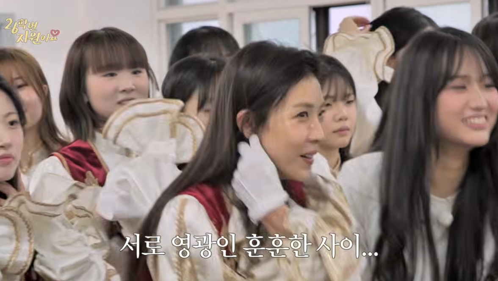
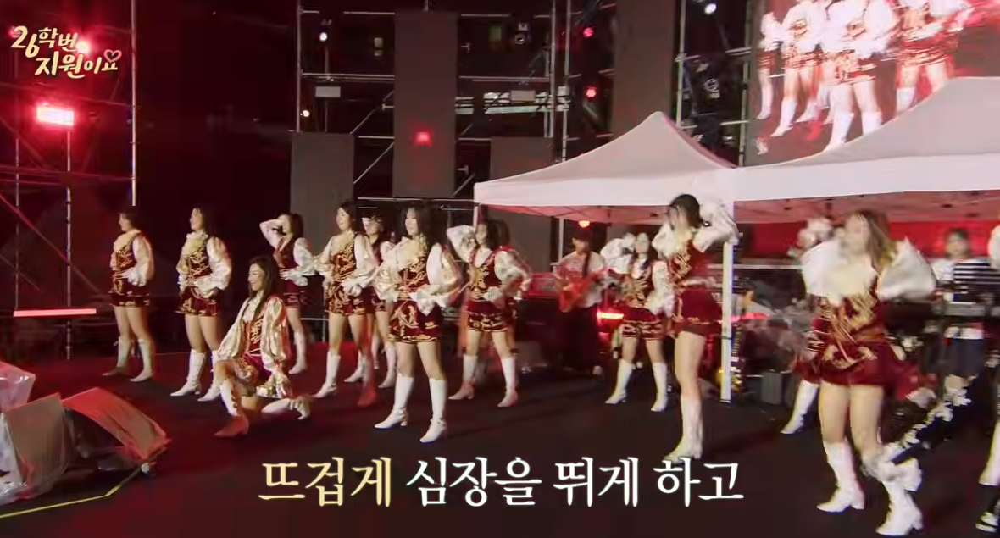

하지원의 경희대 축제 에피소드가 흥미로운 이유는 단순히 연예인이 대학 축제에 갔기 때문이 아니다. 그 장면 안에는 늦게라도 다시 청춘의 리듬 안으로 들어가고 싶은 마음이 있다.
이 에피소드는 크게 세 흐름으로 움직인다. 먼저 캠퍼스 축제의 낯선 활기 속으로 들어간다. 그다음 학생들과 어울리고, 응원단 연습에 몸을 맞춘다. 마지막에는 많은 사람 앞에서 실제 무대에 오른다. 예능의 웃음은 계속 있지만, 핵심은 웃음보다 긴장과 회복에 가깝다.
축제는 젊음의 장소가 아니라 섞임의 장소다
초반부에서 가장 많이 반복되는 감정은 “어색함”이다. 캠퍼스는 익숙한 공간처럼 보이지만, 막상 들어가면 모든 것이 빠르게 바뀌어 있다. 푸드트럭, 학생들의 스타일, 축제의 밀도, 응원 문화까지 낯설다. 그래서 하지원이 느끼는 설렘은 단순한 향수가 아니라 새로 들어가야 하는 세계 앞의 떨림이다.
하지만 에피소드는 그 어색함을 숨기지 않는다. 합석하고 싶어 하는 마음, 학생들과 말 섞는 장면, 후배들에게 응원을 받는 순간이 모두 조금씩 서툴다. 그 서툼이 오히려 자연스럽다. 청춘은 완벽하게 맞아떨어지는 상태가 아니라, 어색해도 들어가 보는 상태에 가깝기 때문이다.

응원단 무대가 주는 긴장
중반 이후 에피소드는 응원단 무대를 향해 좁혀진다. 연습한 박자, 들어가는 타이밍, 응원 구호, 비가 오는 상황, 미끄러운 무대 같은 요소들이 긴장을 만든다. 여기서 재미있는 점은 하지원이 완성된 스타로 서는 것이 아니라 “처음 무대에 서는 학생”처럼 흔들린다는 것이다.
그 흔들림 때문에 무대는 더 진짜처럼 보인다. 잘해야 한다는 압박, 틀리면 어떡하나 하는 걱정, 그래도 해보자는 마음이 동시에 나온다. 예능의 장면이지만, 실제 대학 응원단 무대의 에너지가 들어오면서 화면은 가벼운 체험기를 넘어선다.
다시 20대를 느낀다는 말
후반부에서 하지원은 경희대 26학번이라는 설정을 통해 자신이 느끼지 못했던 20대를 다시 느낀다고 말한다. 이 말은 단순한 방송용 멘트처럼 지나갈 수 있지만, 에피소드 전체를 묶는 핵심 문장에 가깝다.
누구나 어떤 시기를 충분히 누리지 못했다는 감각을 갖고 있다. 공부하느라, 일하느라, 책임을 지느라, 혹은 너무 빨리 어른이 되느라 놓친 시간이 있다. 이 에피소드가 따뜻하게 보이는 이유는 그 놓친 시간을 아주 잠깐이라도 다시 만지는 장면이 있기 때문이다.

예능이 남긴 것
26학번 지원이요의 경희대 응원단 에피소드는 캠퍼스를 배경으로 한 체험 예능이지만, 결론은 꽤 단순하고 좋다. 잘하려고만 하면 무대는 무섭고, 즐기려고 하면 무대는 기억이 된다.
하지원이 학생들과 함께 뛰고, 긴장하고, 응원받고, 마지막에 고맙다고 말하는 흐름은 한 사람이 잠시 다른 세대의 리듬을 빌려 자신의 시간을 회복하는 과정처럼 보인다. 그래서 이 에피소드는 “젊어 보인다”보다 “다시 설렐 수 있다”는 쪽에 더 가깝다.